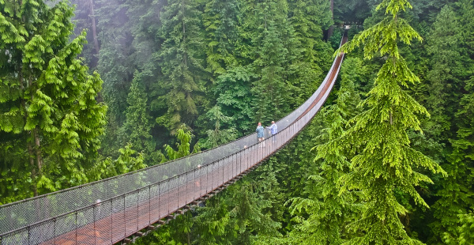
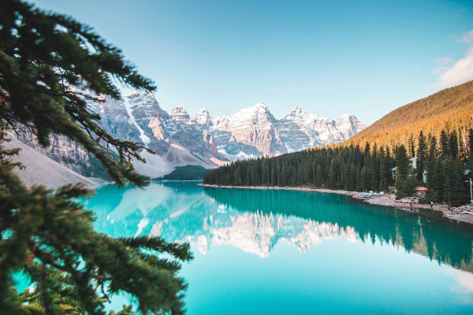
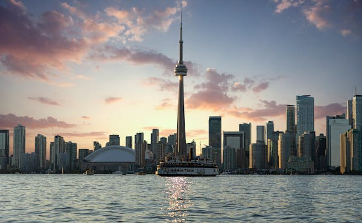
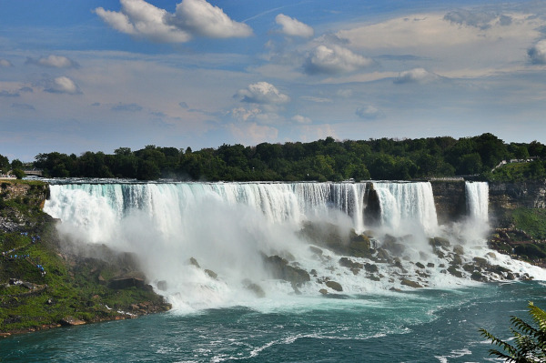
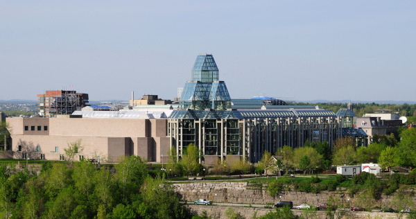

Canadá: O Paraíso da Natureza e Diversidade Cultural
O Canadá é o segundo maior país do mundo em extensão territorial e possui em torno de 37 milhões de habitantes espalhados por suas 10 províncias e territórios. É um país banhado por três oceanos: Atlântico, Pacífico e Ártico, e geralmente muito conhecido por suas paisagens geladas e por seu rigoroso inverno.
Colonizado por ingleses e franceses, o país tem cidades modernas e com excelente qualidade de vida, parques lindos, destinos históricos, muitos espaços para praticar esportes, quedas d'água impressionantes e um povo muito acolhedor, que torna a experiência de viagem ao lugar ainda mais legal.
Neste guia de viagens, vamos explorar as dicas essenciais para tornar sua aventura no Canadá inesquecível, desde a preparação pré-viagem até as experiências que você não pode deixar de vivenciar. Prepare-se para uma jornada que irá expandir seus horizontes e deixar uma marca indelével em sua memória.
Documentos necessários
A documentação de turismo no Canadá é a seguinte:
Passaporte válido por pelo menos 90 dias após a saída do Brasil
Visto ou Autorização Eletrônica de Viagem é obrigatório.
Moeda
A moeda local é o Dólar Canadense (CAD). Cartões de crédito são amplamente aceitos em hotéis e restaurantes, mas leve dinheiro em espécie para mercados e táxis.
Idioma
O inglês e o francês são as línguas oficiais, mas muitos canadenses falam outros idiomas, especialmente em áreas urbanas.
Melhor época para vajar
O Canadá ocupa um território enorme da América do Norte, o que faz com que seu clima possa variar de um lugar para o outro. Entretanto, uma coisa é certa: no inverno faz muito frio no país, enquanto no verão as temperaturas são mais quentes e mais agradáveis para quem não está acostumado ao seu inverno rigoroso.
A primavera, com cidades floridas, e o outono, com árvores de um colorido lindo, podem ser bons períodos para viajar para quem não quer o extremo do inverno e nem a alta temporada do verão.
Muita gente tem receio em viajar ao país no inverno, mas a experiência pode ser inesquecível e o país está completamente preparado para baixas temperaturas. É comum nevar em cidades como Ottawa, Québec, Toronto e Montreal - as duas últimas cidades, inclusive, possuem um excelente sistema de ruas subterrâneas, que são aquecidas.
Em Vancouver o frio é menos intenso do que em cidades ao leste e fica muito alegre no verão, assim como Banff, na área das Montanhas Rochosas Canadenses. O Canadá é lindo! Não importa o período que você escolha visitar, a experiência é sempre enriquecedora!
7 pontos turísticos do Canadá para você conhecer
1. Capilano Suspension Bridge

Aventurar-se nas alturas é o que você procura? Então atravessar a Capilano Suspension Bridge, em Vancouver, será seu passeio perfeito. Sobre o rio Capilano, a 70 metros de altura, está localizada a ponte construída há 128 anos, uma das mais famosas atrações do Canadá. Ao caminhar pelas copas das árvores, você terá uma vista incrível da imensidão do parque onde a trilha suspensa está situada
2. Banff National Park

Fonte: Pexels
Quer conhecer um patrimônio mundial da Unesco? O Banff National Park, em Alberta, é uma ótima opção. Com geleiras sobre as montanhas e águas cristalinas, o parque conta com diversas atividades ao ar livre. Você pode escolher entre muitas opções de esportes, como praticar rafting no verão ou patinar no inverno. A variedade de pousadas, hotéis e resorts proporcionam experiências únicas, como acordar com uma vista incrível como a da foto acima, do Lake Louise.
3. CN Tower

Se você é mais urbano, quer visitar uma atração diferente e de quebra sentir um friozinho na barriga, a dica é caminhar pela borda da terceira torre mais alta do mundo, a CN Tower. Finalizada em 1975, ela foi construída com o objetivo de resolver os problemas de transmissão de televisão que tinham seus sinais bloqueados por prédios cada vez mais altos. Com 553 metros de altura, hoje ela funciona também como ponto turístico, um dos mais visitados do Canadá. Do topo você pode admirar a vista, comer em um restaurante giratório ou caminhar pelo lado de fora preso por cabos de segurança.
4. Parliament Hill

As Colinas do Parlamento, ou Paliament Hill, são uma atração incrível para quem é apaixonado por arquitetura, política e história. Os três edifícios em estilo gótico na capital Ottawa abrigam o Senado, os membros do parlamento, a Biblioteca do Parlamento e outras áreas administrativas. Construído às margens do rio Ottawa, o complexo é o centro político canadense desde 1859. Com visitas gratuitas durante o ano todo, os turistas podem conhecer o interior das construções com suas obras de arte e belíssimas vistas, como a da Torre da Paz, na parte central.
5. Niagara Falls

Fonte: Pixabay
Na província de Ontário, você encontra um dos maiores espetáculos da natureza: as Cataratas do Niágara. As três grandes cachoeiras do Rio Niágara formam um dos mais conhecidos pontos turísticos do mundo, atraindo milhares de visitantes todos os anos. A cidade gira em torno da atração e abriga um complexo de lazer completo, com resorts, restaurantes, vinícolas, parques e até cassinos. Diversão para todos os gostos em meio à natureza.
6. Botanic Garden
O Canadá acumula títulos de grandiosidades e o Botanic Garden de Montreal também entra nessa lista como um dos maiores jardins botânicos do mundo. Fundado em 1931, ele recebe cerca de 900 mil habitantes por ano. Com mais de 22 mil espécies de plantas, o Botanic Garden é dividido em diferentes estilos de jardins: chinês, japonês, alpino, o das primeiras nações, entre outros. Além do turismo, o local é referência para o estudo e preservação das espécies nativas.
7. National Gallery of Canada

Se você é apaixonado por arte e cultura, deve visitar um grandioso prédio de vidro localizado na capital canadense, Ottawa. Essa é a estrutura que abriga a National Gallery of Canadá, uma das principais galerias de artes do país. Do lado de dentro, é possível encontrar exposições permanentes e temporárias de grandes artistas mundiais. Já do lado de fora, a atração principal é a Maman, uma escultura de cobre em formato de aranha com mais de 9 metros de altura.